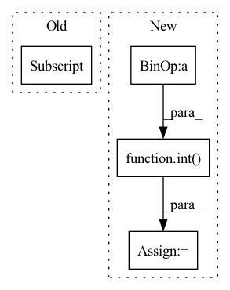

Pattern ID :368
Before Change
// GET SCORES for pseudo point locations
pseudo_norm = normalize_coords(pseudo_coords, height, width).unsqueeze(1) // B x 1 x N x 2
tgt_scores_dense = scores_dense[1::self.window_size]
pseudo_scores = F.grid_sample(tgt_scores_dense, pseudo_norm, mode="bilinear") // B x 1 x 1 x N
pseudo_scores = pseudo_scores.reshape(batch_size, 1, n_points) // B x 1 x N
// GET DESCRIPTORS for pseudo point locations
pseudo_desc = F.grid_sample(tgt_desc_dense, pseudo_norm, mode="bilinear") // B x C x 1 x NAfter Change
// TODO: loop if window_size is greater than 2 (for cycle loss)
BW, encoder_dim, n_points = keypoint_desc.size()
batch_size = int( BW / self.window_size)
_, _, height, width = desc_dense.size()
kp_inds, dense_inds = get_indices(batch_size, self.window_size)
src_desc = keypoint_desc[kp_inds] // B x C x N
src_desc = F.normalize(src_desc, dim=1)In pattern: SUPERPATTERN
Frequency: 3
Non-data size: 4
Instances Fragment ID: 1483335
Project Name: utiasasrl/hero_radar_odometry
Commit Name: 3393ae645f3b4eea057784a2cd3746aefb0c81b1
Time: 2021-01-08
Author: keenburn2004@gmail.com
File Name: networks/softmax_matcher.py
M Class Name: SoftmaxMatcher
N Class Name: SoftmaxMatcher
M Method Name: forward(5)
N Method Name: forward(5)
M Parent Class: nn.Module
N Parent Class: nn.Module
M File Name: networks/softmax_matcher.py
N File Name: networks/softmax_matcher.py
M Start Line: 26
M End Line: 63
N Start Line: 27
N End Line: 66
Before Change
@torch.no_grad()
def forward(self, outputs, targets, anchors, num_top_queries=1):
bs = outputs["pred_logits"].shape[0]
// Split queries in individual classes
if self.anchor_matching:
classes_queries_boxes = anchors[None].repeat((bs, 1, 1)).reshape(bs, 20, 27, -1).cpu().float() After Change
@torch.no_grad()
def forward(self, outputs, targets, anchors, num_top_queries=1):
bs, num_queries, _ = outputs["pred_logits"].shape
num_queries_per_organ = int( num_queries / 20)
// Split queries in individual classes
if self.anchor_matching:
classes_queries_boxes = anchors[None].repeat((bs, 1, 1)).reshape(bs, 20, num_queries_per_organ, -1).cpu().float() Fragment ID: 1483331
Project Name: bwittmann/transoar
Commit Name: b14bef98958992266e5d5f24a14f7624eda9ef21
Time: 2022-05-04
Author: bastian.wittmann@tum.de
File Name: transoar/models/matcher.py
M Class Name: HungarianMatcher
N Class Name: HungarianMatcher
M Method Name: forward(5)
N Method Name: forward(5)
M Parent Class: nn.Module
N Parent Class: nn.Module
M File Name: transoar/models/matcher.py
N File Name: transoar/models/matcher.py
M Start Line: 20
M End Line: 58
N Start Line: 20
N End Line: 62
Before Change
mask = kwargs.get("mask", None)
if mask is not None and mask.shape[1] == x.shape[1]:
mask = mask[:, :-1]
kwargs["mask"] = mask
out = self.net(xi, **kwargs)
loss = F.cross_entropy(out.transpose(1, 2), xo, ignore_index = self.ignore_index)After Change
if self.mask_prob > 0.:
rand = torch.randn(inp.shape, device = x.device)
rand[:, 0] = -torch.finfo(rand.dtype).max // first token should not be masked out
num_mask = min(int( seq * self.mask_prob) , seq - 1)
indices = rand.topk(num_mask, dim = -1).indices
mask = ~torch.zeros_like(inp).scatter(1, indices, 1.).bool()
kwargs.update(context_mask = mask) Fragment ID: 1483328
Project Name: lucidrains/x-transformers
Commit Name: 595a4745d532c20b8ebd310256c342e946a4cef7
Time: 2022-11-02
Author: lucidrains@gmail.com
File Name: x_transformers/autoregressive_wrapper.py
M Class Name: AutoregressiveWrapper
N Class Name: AutoregressiveWrapper
M Method Name: forward(2)
N Method Name: forward(2)
M Parent Class: nn.Module
N Parent Class: nn.Module
M File Name: x_transformers/autoregressive_wrapper.py
N File Name: x_transformers/autoregressive_wrapper.py
M Start Line: 107
M End Line: 118
N Start Line: 122
N End Line: 142